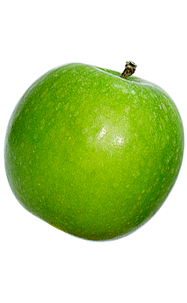
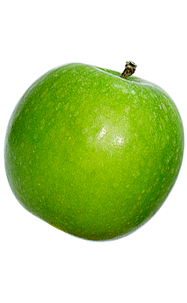
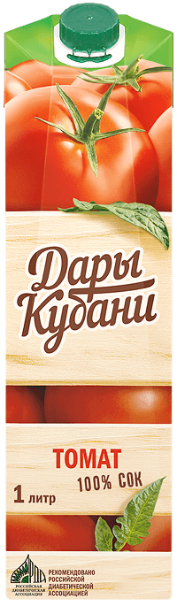
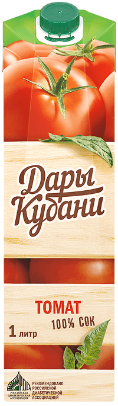

О бренде
Всё лучшее от природы впитывают сочные плоды, созревающие под жарким южным солнцем и тёплыми дождями Краснодарского края. Полные вкуса и витаминов, именно такие фрукты и овощи попадают в соки и нектары «Дары Кубани».
Кубань – историко-географическая область, охватывающая самые южные земли нашей Родины. Это лето России! Здесь наиболее длинный сезон сбора урожая и в действительности самые насыщенные и полезные яблоки, виноград, морковь и другие ценные культуры.
Наливные кубанские яблоки – это, конечно, наша главная гордость. Специфика южного климата сделала их идеальными априори. Вместе с тем, лишь убедившись в превосходном качестве каждого плода, мы отправляем собранный урожай на производственные линии.
Тропические фрукты в России не растут, но поступают к нам кратчайшим путем, прямо с портов Чёрного моря. Партнёры уже знают, как строго мы относимся к качеству сырья, поэтому поставляют исключительно спелые отборные плоды для соков и нектаров «Дары Кубани».
Мы искренне гордимся своей продукцией и регулярно убеждаемся на личном опыте: в каждом стакане соков и нектаров «Дары Кубани» – не только насыщенный первозданный вкус фруктов и овощей, но и максимальная польза этих сочных даров природы!


 

 


Почётное место в линейке вкусов занимают яблочный и томатный «Дары Кубани». Каждый из них неповторим и представляет собой кладезь витаминов и минералов. Кроме того, эти соки рекомендованы Российской диабетической ассоциацией.
Яблоки – самый распространенный в России фрукт. Наверно, именно поэтому яблочный сок считается самым любимым у нас в стране. Столь же очевиден и тот факт, что лучшими по своим вкусовым качествам и полезности всегда были и остаются южные кубанские яблоки!
Скрупулёзно и строго мы выбираем как поставщиков, так и каждое яблочко. А если нас назовут «вредными» закупщиками, примем за комплимент. Ведь именно благодаря этому наши соки и нектары – самые что ни на есть полезные!
На сегодняшний день соки и нектары «Дары Кубани» можно приобрести в десятках магазинов крупных мегаполисов и небольших городов. С нами работают ведущие торговые сети.

В 2018 году соки и нектары «Дары Кубани» получили звание «Кубанский продукт»